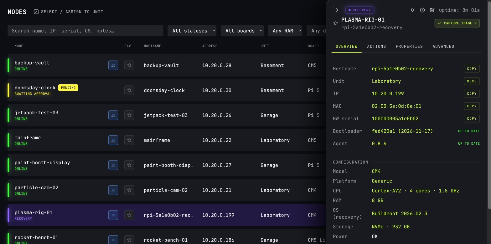
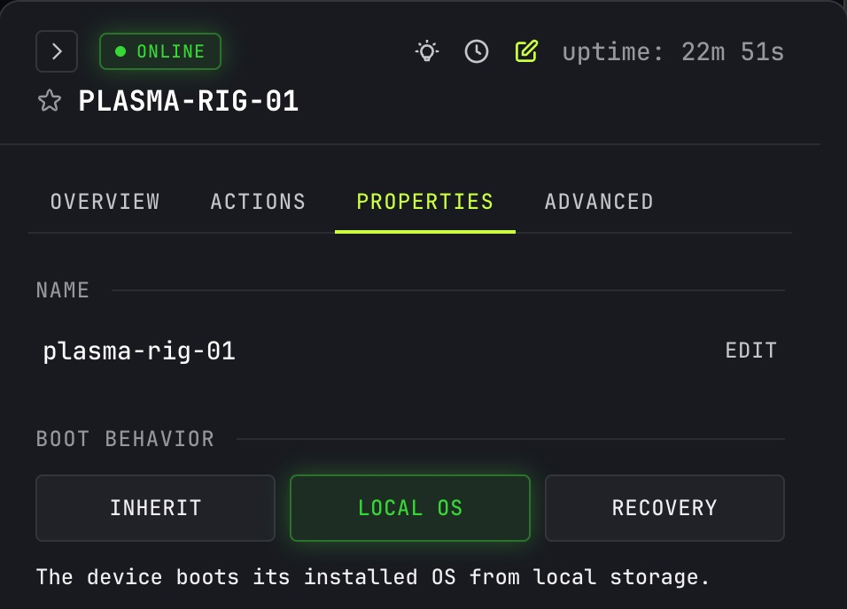

Installing an operating system
Write an OS image to a node's drive from the recovery system and boot it.
Install or reinstall an OS on an approved node. The node boots a small recovery system from your server, the server writes the image to its drive, and the node then boots the new system from its own disk.
Install an OS on a node
- Go to Operations → Install images, click Upload image, fill in Title and Version, choose the file, and click Done. Use
.img,.iso,.xzor.zst. - Open the node, go to Actions, click Reboot to recovery and confirm. Wait until the node turns violet and shows RECOVERY.
- Click Install OS in the Provisioning group.
- Check the Image and pick the Target Device. The node's default image is preselected and marked default, and an image without an uploaded file is listed but can't be chosen. Read the device path, because a board with a card or eMMC lists those too.
- Click Install OS and confirm. This erases the target drive. Progress shows in Command history.
- Click Install Agent, choose the same Target Device, keep the other defaults and start it. It takes seconds.
- Open Properties and set Boot behavior to Local OS.
- Click Actions → Reboot.
The node comes back ONLINE in the new system with the image's default hostname, which you can change with Actions → Change hostname. If an install fails, the node's boot target switches to Recovery so it doesn't boot a half-written disk. Run Install OS and Install Agent again.
Reboot to recovery works once. The next reboot goes back to the node's saved boot target. It is refused when the node is offline or when its boot order doesn't reach network boot.
For a faster install of a vendor .xz file, use Repack to multi-block XZ in the image's settings. Size limits are set by whoever runs the server (OS-IMAGES.md).

Choose what a node boots
Local OS boots the system on the node's drive. Recovery boots the recovery system from your server. Set it in one of three places:
- on the node, in Properties → Boot behavior
- on a unit, in its Policies tab on the Organization page
- for the whole account, in Organization → Account defaults → Boot → Target
A node on Inherit takes its unit's value, then the parent unit's, then the account default. The account default is Recovery until you change it (Organizational units and policies).

Update the bootloader
Network boot works because each node's bootloader knows your server's address and key. It is written on approval by default. Open Advanced → Bootloader / EEPROM and click Update bootloader when it shows Update available or a banner says the bootloader isn't set up for this server. Then click Reboot to apply.

Back up a node
Create backup in the Provisioning group captures the node's drive as an image you can put back later. See Backups and gold images.
Next: Working with a node.